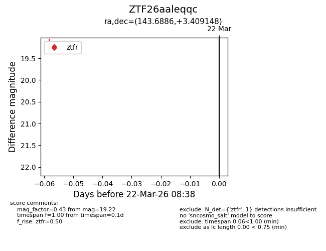
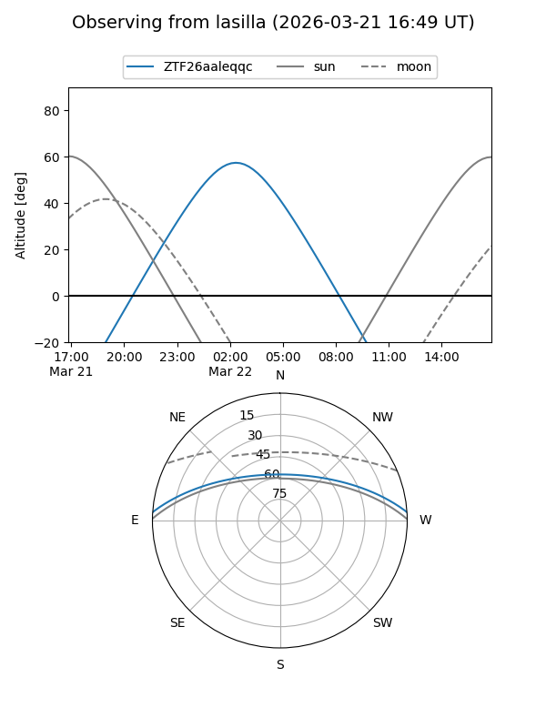
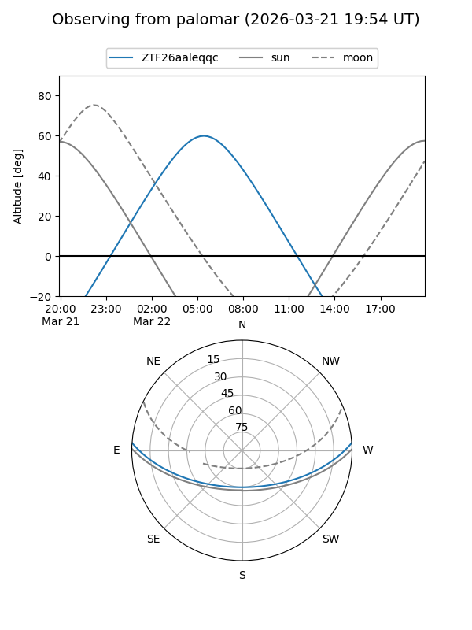

ZTF26aaleqqc
Target ZTF26aaleqqc at 2026-03-22 08:40
Aliases and brokers:
FINK: link
Lasair: link
ALeRCE: link
alt names
ZTF26aaleqqc (ztf,fink_ztf)
Coordinates:
equatorial (ra, dec) = 143.6886,+3.40915
equatorial (HMS+DMS) = 09:34:45.26,+03:24:32.93
galactic (l, b) = (230.8807,+37.44245)
Flags:
Photometry:
last ztfr=19.22
1 ztfr detections
Lightcurve

Visibility


Additional plots